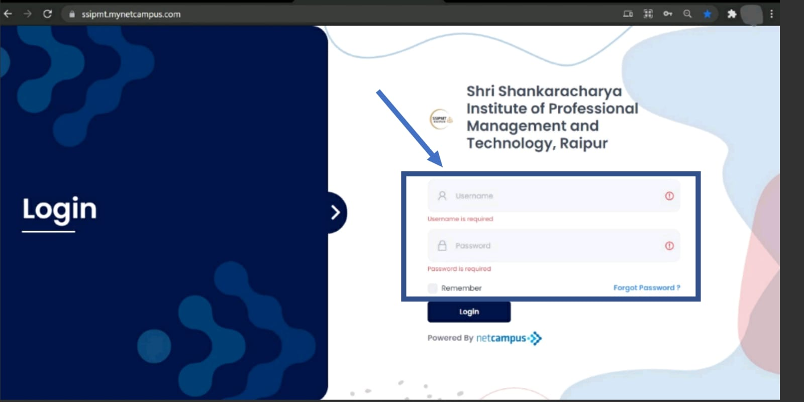
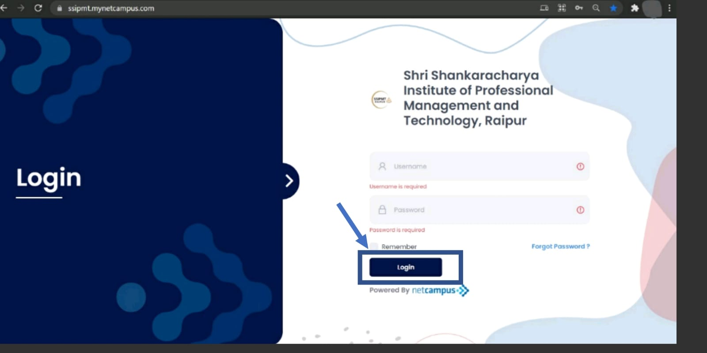
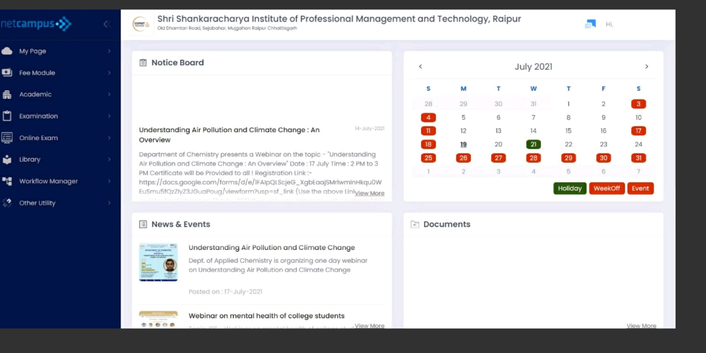

Introduction
Net Campus is basically a full and pro solution for the universities, colleges and schools which manages all type problems related to academic and management. NetCampus Student Portal consists of 8 modules with respective sub modules in each module 8 modules are as follows:
- My Page
- Fee Module
- Academic
- Examination
- Online Exam
- Library
- Workflow Manager
- Other utitlities
The purpose for this document is to provide a idea of how this student portal is capable to manage the records and also understand about the use of each module of student portal in elaborated manner.
How to Login in Student Portal
Step 1:-
Write the URL https://ssipmt.mynetcampus.com/ on any Browser such as chrome browser

Step 2:-
Enter Username and Password which is provided
If you have forgot your password click on the forget password option

Step 3:-
Click on the login button.

Step 4:-
After successful login it will open the student portal dashboard as shown in the figure.

My Page
This is the first module of the netcampus webapp. It comprises of 4 more parts which are namely: -
- Dashboard
- My Mailbox
- Calender Events
- No-Due Status
-
Dashboard:-
It is the first Sub-module of the "My page" module which is by default page of the app as it comprises of all the basic information about you and your institute like events, notice board, calendar, to do list photo gallery, important documents, meeting schedules etc.
Notice board is as same as a notice board in the college. It will show all the important notice.

Click on "view more" and you can see all the active and inactive notices.

In "News and Events" section, you can see the upcoming events of the institute and the news related to the institute.

Click on "view more" and you can see all the active and inactive notices.

In the "Calendar", all the events are marked on the date, some dates are marked as green which are national or state holiday, and some are marked as red for the day off or the important events.

To-Do list is kind of a Wishlist that you want to do in a particular period.

To add new item in To-Do list
Step 1:-
Click on Add New button.

Step 2:-
Select the due date and add description. The click on Add Item button.

Document section contains all the documents sent, documents can be Academic calendar, notes, EOA, purchase order, report, tests and it will also show the time when its available, and status if its available now or not.
-
My Mailbox:-
In Mailbox you can send or receive messages to/from your faculties, classmates, HODs etc
To send any mail:-
How to create a mail:-
-
Calendar Event
It is another sub-module under My page which will behold all the events that have had happened in the institute or about to happen in the institute. You can check the events according to there categories, there sre several categories such as Academic, event, festival, holidays, weekend off

Step 1:-
Click on compose mail, than with the help of button select to whom you want to sent the mail(to teaching staff, role based or another student)
If you want to send mail to a teaching staff, click on teaching staff option and then click on show list.
It will show all the valid name of teaching faculty than choose your faculty and press select user button.

OR
If you want to send mail to another student than click on student option and then select the course of the student in which he/she is, then select their semester, select division (if any and if that department do not have division than select A) and at last click on show list .
Select the students name and then click on select user

OR
If you want to send mail to any other person of the institute then select role based option and then select their role and then select their user type and then click on select user button

Select your role and than select the concerned person and then click on Select user

Step 2:-
Add cc (if required in the same manner as above)
Step 3:-
Add subject the one liner statement to tell the receiver why you have sent them the email.
Step 4:-
Then add content
Step 5:-
Then click on send button to send the mail

Inbox:-
It Is a place where you can see all the mails you have received from another person.

Outbox:-
It is a place where you can see all the messages you have sent till now in the past.

Fee Module
Here, the fee module contains all the details about fees and it Consists of 3 parts, namely: -
- My Fee Structure
- Payment history
- Pay fee Online
-
My Fee Structure:-
In this sub-module, we can see the fee structure institute of all the semester. This module will show you all the fees that are included in the fees structure separately

-
Payment History:-
Here, you can see all the past payments you have done in the institutes in the name of fees, and you can withdraw your receipt from the same.

-
Pay Fee Online:-
This is the sub-module, where you can pay your fees online with different modes of payment like payment with debit card, credit card, upi etc.

Academic :-
This module is used to describe things that relate to the work for the students such as, their academic Syllabus, schedule of their Online classes, Timetable, Notes, Assignment, Student Attendance, Co-curricular activities. This module consists of 10 sub modules which are as follows: -
- My Syllabus:-
In this module you can search your syllabus of any subjects of your semester. You will also find your existing syllabus there in the module. Picture show the syllabus of Academic front screen-

- Course Exit Survey:-
Course exit survey is typically an activity of evaluating phase. This is a course feedback survey. Student have to answer questions below so Institution can try to improve the course in future semester.

- Student Course Exit Feedback:-
In this module student can give their feedback about their departments, teacher’s, their library facilities, sport facilities etc. after their course completion. If students want to give any other suggestion, they can give in the Suggestion box there. After filling Feedback form student have to click on submit button. Below picture shows the look of a Feedback form-

- My Online Class:-
My online class sub module will update you with your online lectures. After click on My Online Class you will get online tutorial room. In that you have to set date (which day you’re checking) and your faculty name. After putting the data click on search button you will get the scheduled lectures with Date, Timing and topic of the lecture.

- My Timetable:-
In this module My Timetable, will schedule the designating time at which the lecture held for the week. Student can click on “Go live” for joining the online lectures at the given time. Below the picture shows the front screen of My Timetable -

- My Attendance:-
My Attendance module will give the record of attendance of month or a semester of students. It will give the complete data of Attendance of each and every Subject separately out of total lecture.

- My Notes :-
In this module student can access their notes of whichever subject they want. After lectures teachers will upload notes of particular subject. Student can download the notes from there.

- My Assignment:-
In this module student can check their assignments if they have any task to complete. Student can also submit their assignments from here on given date. The student get the detail of assignment after clicking on subject of the assignment they get to do.
Picture below show how this module works-

After Clicking on “Submit Assignment” Button the new page will open with the details of that particular Assignments. The picture below shows the page front View of Assignment submission.

- Co-Curricular Activity
In co-curricular activity student can add up their Certificate in which ever events they take part apart from academics like sports, Music, Dance, Coding etc. Student can add more than one certificates in this module by clicking “Add New” which is on the right side of the screen. Students can also search the upcoming events from this.

On clicking “Add New” Button you will get this page for entering details of your certification and you will add your detail in Excel sheet too.

- Vocational and Training:-
In Vocational and Training, student can check if there is any training or not from the department. If student already did some training, they can add their Training certificate here with the details of that training like organization name, Date of ending and joining, vocational type and etc.

Examination
This module is used to describe schedule of exam and student exam result they can see the timetable of their Class Test, main exam and can view their class test result too. This module is consisting of two sub modules i.e.
- Exam Schedule:-
In Exam schedule student can see their exam dates when the Class test and main exam will schedule. Different Semesters have different timetables. Student can see the timetable of different academic years.

- My Exam Result:-
My Exam Result will show the score of your class Test 1 & class Test 2 which student get in different subject of their semesters with calculation of average percentage of different CT’S.
The front screen of My exam result is given below:

Library:-
This module manages and track all the librarian work for the students such as Book availability, search for any book, issued book, returned book history of any particular user and book requisition list
This module consists of three sub modules which are as follows: -
- Book Requisition List:-
In this sub module you can request for a particular book by searching it through its book title, Author and Publisher
Figure shows the Book Requisition List front screen

In this module, User can see all those book list for which you have requested and can also search it by its date and title by entering the details and then clicking on the search option

Or can request for the book via New Requisition option present on the screen

For searching your requested book below steps can be followed
Step 1:-
Click on the Requisition date and edit the date from which-to-which date user requested for the book
Step 2:-
Select the book title and then click on the search button after clicking the list will be displayed on the below area

For new request after clicking on new requisition the below screen will appear where user can write the book title, author of the book or publisher and can search for the availability of any particular book

Step 1:-
Write the book title, author of the book or publisher as shown in the figure
 Step 2:-
Step 2:-
After step 1 click on the search option to see the availability of the book
 Step 3:-
Step 3:-
After following step 1 and step 2 the list of searched books will be displayed with its quantity like total books available, total book issued and also the total quantity of books present on the library as shown in the figure

- Book History
This sub module will display the list of books which are issued to the particular student and also the history of all the book which are returned by the user to the library as shown in the figure

- Book Search
Here in this sub module user can search for any particular book by its title, author or publisher

Step 1:-
User should enter any of the specific field or all the fields such as book title, author or publisher

Step 2:-
After entering , click on the search option

Step 3:-
After clicking on search button, it will display the list of available book which the user has searched for with its quantity

Or
There is an option named as My Requisition which will display the list of books which is issued to the user and also history of books which are returned by the user as shown in the figure

This module allows students to raise request like bus change, bus discontinue, bus service, hostel service, fee discount, hostel room change, library fine waved off, meal, test and complain
This module consists of one sub module named as Request Manager
Request Manager’s front screen is shown in the figure where the list of request by particular student is displayed

Student can request for any of the issues through this module by just clicking on add new option

After Clicking on add new option the screen appears as shown in the figure

Step 1:-
Click on the Request type option the list will appear containing all the request as shown in the figure

Step 2:-
Select any of the request which they want to raise and then add the details asked in each request
Step 3:-
Add the request description
Step 4:-
(optional) Add the attachment if any by clicking on browse option as shown in figure

Step 5:-
Click on the Submit Request to submit the request

To view the request, click on the view option as shown on the figure

This module manages and let the student know their hostel and transport details This module consists of two sub modules which are: -
-
My hostel Details:-
It will display whether the student has taken the hostel or not If not taken the hostel facility it will display the text Hostel Facility not taken!! As shown in the figure

If hostel facility is taken by the student, then the details like Hostel and Room details will be displayed as shown in the figure

-
My Transport details
It will display whether the student has taken the transport facility or not If not taken the transport facility it will display the text Transport Facility not taken!! As shown in the figure

If transport facility is taken by the student, then the details like Transport details and pick & drop details will be displayed as shown in the figure

My Profile:-
On clicking on User profile, you will get ‘My profile’. You can update your personal, parents & Educational detail from here.

You can edit your personal detail from here. After editing your profile details click on ‘Update’ button.


My Message
This module is similar to the my mail module. Here, you can create a mail, receive mail, see the history of mail already sent.
How to create a mail:-
Step 1:-
Click on compose mail, than with the help of button select to whom you want to sent the mail(to teaching staff, role based or another student)
If you want to send mail to a teaching staff, click on teaching staff option and then click on show list.
It will show all the valid name of teaching faculty than choose your faculty and press select user button.
OR
If you want to send mail to another student than click on student option and then select the course of the student in which he/she is, then select their semester, select division (if any and if that department do not have division than select A) and at last click on show list .
Select the students name and then click on select user
OR
If you want to send mail to any other person of the institute then select role based option and then select their role and then select their user type and then click on select user button
Select your role and than select the concerned person and then click on Select user
Step 2:-
Add cc (if required in the same manner as above)
Step 3:-
Add subject the one liner statement to tell the receiver why you have sent them the email.
Step 4:-
Then add content
Step 5:-
Then click on send button to send the mail
Inbox:-
It Is a place where you can see all the mails you have received from another person.
Outbox:-
It is a place where you can see all the messages you have sent till now in the past.
Password Manager:-
This section will help students to change or recover their password
Password Recovery:-
first enter Current Password or if don’t remember password then can go for forget password option to recover password

To change Password:-
Step 1:-
Enter current password and then enter the new password after that reenter the new password in the verify password area and then click on the submit button

Step 2:-
After clicking on submit button a message displays that password changes successfully as shown in the figure

Academic Session
Academic and session module will consist the data of different Academic year. On clicking Academic session on user profile, you can search the data of any year. For Ex. If you search the academic year 2018-2019 the dashboard of NetCampus will according to the year that you have search. Below picture show the front screen of the Session & Academic Year-